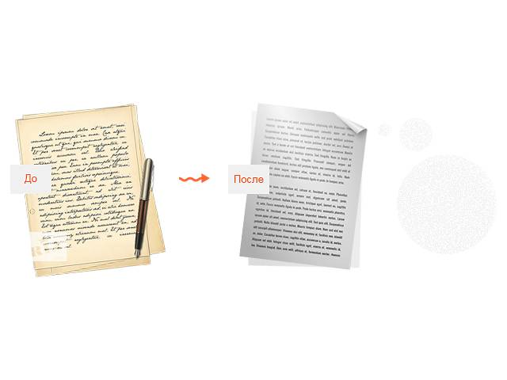
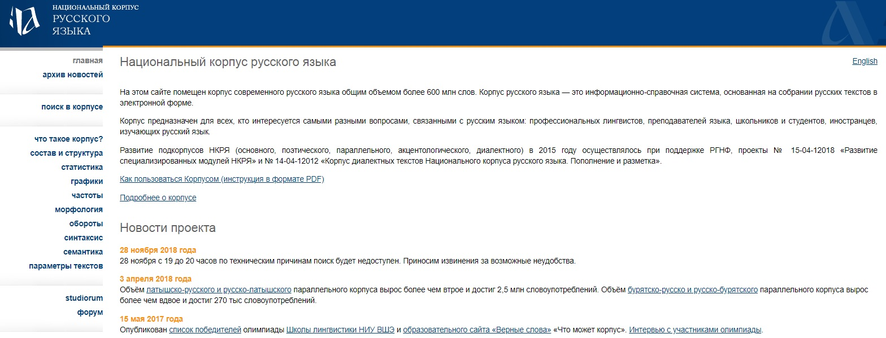
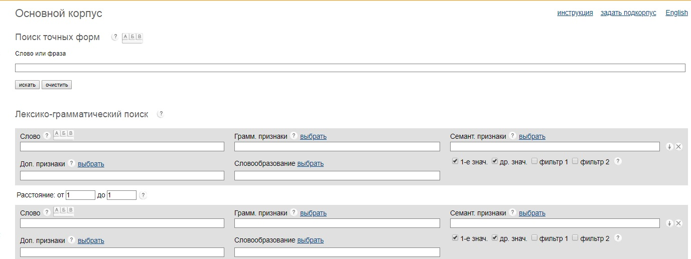

Я, Владислава Андреевна Подосинникова, на данный момент учусь в ВШЭ на Филологии на первом курсе.
Я довольно разносторонняя личность: люблю играть на фортепиано и пейнтбольные перестрелки.
Говоря о филологии, меня привлекает больше поэзия.
Технологии, безусловно, важны для любой профессии в наши дни. Филологи не исключение.
Благодаря новшествам компьютер может распознать рукописный текст и переконвертировать его в печатный. Многочисленные корпуса, необходимые для каждого филолога - это так же заслуга современных технологий.
Национальный корпус русского языка - важный ресурс, но и у него имеются свои недостатки.
По сравнению с сайтами крупных коммерческих компаний, интерфейс этого довольно бедный
Более того, неопытному пользователю будет сложно разобраться в том, как сайт функционирует.
Плюсом являются пункты меню "Использование корпуса" и "Что такое корпус". После прочтения информации на этих страницах, становится ясно, как работать с корпусом.
Ссылка на корпус